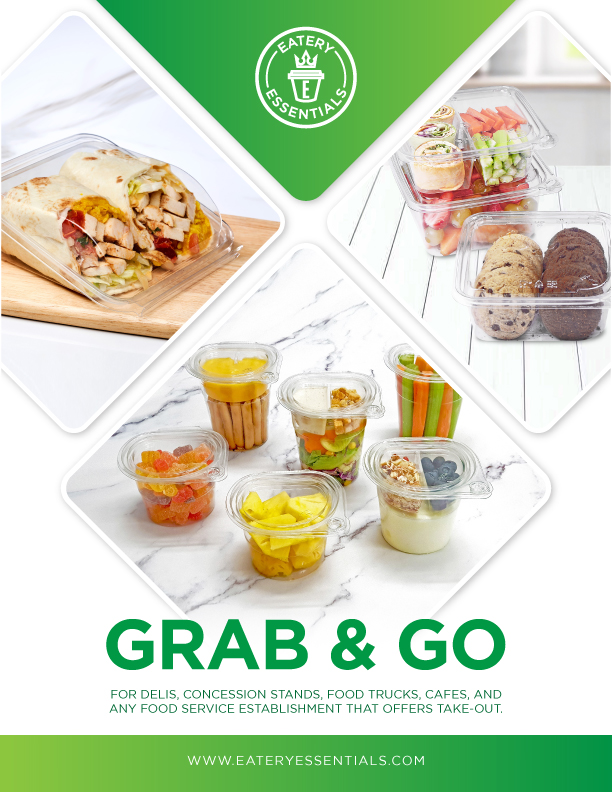

Choosing the Right Container for Your Deli Case

The deli case is one of the highest-margin and highest-traffic areas in a supermarket. It's also one of the most complex environments for packaging: products need to look premium under fluorescent lighting, stay fresh across multiple temperature zones, resist fogging, stack without crushing, and still open easily for customers. The wrong container choice ripples through your entire fresh food operation.
Step 1: Map Your Temperature Profile
Before evaluating any container, document the temperature range each product will experience from pack-out to consumption. A rotisserie chicken sitting in a warming case for 4 hours has completely different requirements than a cold pasta salad destined for a refrigerated open-air case.
- Cold (0—10°C): Standard rPET containers work perfectly. Prioritize clarity and anti-fog properties.
- Warm-hold (40—65°C): PP or CPET required. Standard PET will warp.
- Hot-fill (>65°C): PP or aluminum trays only.
Step 2: Determine Your Clarity Requirements
For fresh salads, sandwiches, sushi, and prepared proteins — clarity is commercial. Consumers in a self-service deli make purchase decisions within 2—3 seconds. A container with optical haze, scratches, or condensation fog can make a premium product look unappetizing even if the food is flawlessly prepared.
rPET containers from Eatery Essentials achieve near-optically-clear results. Specify anti-fog coating or vented lid options for products prone to steam accumulation.
Step 3: Right-Size Your Containers
Oversized containers create dead air space, accelerating moisture loss and product desiccation. They also waste shelf space and case capacity. Undersized containers cause overfill, structural failure, and presentation issues. The right container should accommodate your standard portion at roughly 80—90% fill capacity — enough headroom to show the product but not enough to cause the product to move excessively.
Eatery Essentials offers containers from 4 oz. to 64 oz. in round, rectangle, and specialty formats. Our sales team can help you work through portion sizing before you commit to tooling or inventory.
Step 4: Evaluate Tamper-Evidence Requirements
Many grocery buyers now require tamper-evident containers for self-service deli items. Our But-N-Loc system provides structural tamper evidence without requiring a separate label — the lid physically deforms when opened, making tampering unmistakably visible. This satisfies most retailer audit requirements without adding labor to your pack-out process.
Step 5: Calculate Total Cost of Ownership
Container purchase price is just one input. Factor in:
- Shrink/waste reduction — better seal integrity extends shelf life, reducing markdown and discard rates
- Labor at pack-out — containers that are hard to open, stack, or close add significant labor cost at scale
- Storage density — how many nested units per case determines your warehousing footprint and freight efficiency
- Consumer complaints — leaky or failed containers generate returns and brand reputation damage
A container that costs 12% more but reduces shrink by 3% and eliminates half your tamper-evident label labor often delivers a positive net ROI within two quarters. Our team can help you run the numbers for your specific program.